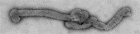

ShareCompartir
ShareCompartir
Bourbon virus
On this Page
- How do I know if I have been infected with Bourbon virus?
- What is the treatment for Bourbon virus disease?
- What should I do if I think someone might be infected with Bourbon virus?
- Can Bourbon virus cause animals to become ill?
- Information about Bourbon virus for healthcare providers
- Bourbon virus resources
Bourbon Virus
Frequently Asked Questions

What is Bourbon virus?
Bourbon virus belongs to a group of viruses called thogotoviruses. Viruses in this group are found all over the world. A few of these viruses can cause people to get sick.
How do people get infected with Bourbon virus?
We do not yet fully know how people become infected with Bourbon virus. However, based on what we know about similar viruses, it is likely that Bourbon virus is spread through tick or other insect bites.
Where have cases of Bourbon virus disease occurred?
As of February 12, 2015, only one case of Bourbon virus disease had been identified in eastern Kansas in late spring 2014. The man who was infected later died. At this time, we do not know if the virus might be found in other areas of the United States.
What are the symptoms of Bourbon virus?
Because there has been only one case identified thus far, scientists are still learning about possible symptoms caused by this new virus. In the one person who was diagnosed with Bourbon virus disease, symptoms included fever, tiredness, rash, headache, other body aches, nausea, and vomiting. The person also had low blood counts for cells that fight infection and help prevent bleeding.
Who is at risk for infection with Bourbon virus?
People likely become infected with Bourbon virus when they are bitten by a tick or other insect. Therefore, people who do not take steps to protect themselves from tick or insect bites when they work or spend time outside may be more likely to be infected.
How can people reduce the chance of becoming infected with Bourbon virus?
There is no vaccine or drug to prevent or treat Bourbon virus disease. Therefore, preventing bites from ticks and other insects may be the best way to prevent infection. Here are ways to protect yourself from tick and other bug bites when you are outdoors:
- Use insect repellents
- Wear long sleeves and pants
- Avoid bushy and wooded areas
- Perform thorough tick checks after spending time outdoors
Additional information on reducing exposure to ticks is available on the CDC Ticks website.
How do I know if I have been infected with Bourbon virus?
Currently, no laboratory tests are routinely available to tell if a person is infected with Bourbon virus. Tests that will help a doctor diagnose Bourbon virus infection are being developed. See your healthcare provider if you have any symptoms that concern you.
What is the treatment for Bourbon virus disease?
Because there is no medicine to treat Bourbon virus disease, doctors can only treat the symptoms. For example, some patients may need to be hospitalized and given intravenous fluids and treatment for pain and fever. Antibiotics are not effective against viruses, including Bourbon virus.
What should I do if I think someone might be infected with Bourbon virus?
See your healthcare provider if you have any symptoms that concern you.
Can Bourbon virus cause animals to become ill?
Scientists do not yet know what animals can get infected or become sick from Bourbon virus. Studies are ongoing to look at this. See your veterinarian if your pet or livestock have any symptoms that concern you.
Information about Bourbon virus for healthcare providers
Bourbon virus is a novel RNA virus in the genus Thogotovirus (family Orthomyxoviridae) that was recently discovered in Bourbon County, Kansas.
Epidemiology
The one case of Bourbon virus disease that has been identified was in a previously healthy male over 50 years of age who had onset of symptoms during late spring 2014. The patient had reported exposure to ticks before becoming ill.
Clinical Signs and Symptoms
The case patient presented with fever, fatigue, anorexia, nausea, vomiting, and a maculopapular rash. He was also found to have thrombocytopenia and leukopenia. Based on the patient’s clinical signs and symptoms, he was thought to have a tick-borne disease. The patient was given doxycycline but failed to improve clinically. His condition worsened, and he died.
Treatment and Outcome
Currently there are no specific medications or therapies for Bourbon virus disease. Supportive therapy is recommended for any patient suspected of having Bourbon virus disease.
Diagnosis
There is no routine testing available for Bourbon virus. However, protocols are being developed to allow for investigational diagnostic testing of acute disease. Please contact your state health department if you have a patient with an acute illness that might be compatible with Bourbon virus infection.
Bourbon virus resources
- Kosoy OI, Lambert AJ, Hawkinson DJ, Pastula DM, Goldsmith CS, Hunt DC, et al. Novel Thogotovirus species associated with febrile illness and death, United States, 2014. Emerg Infect Dis. 2015 May; Epub.
- Kansas Department of Health and Environment. KDHE and CDC Investigate New Virus. Accessed on February 10, 2015.
- CDC’s Advanced Molecular Detection story Tried-and-true and State-of-the-art Combine to Uncover a Hidden Virus.
Contact Us:
- Division of Vector-Borne Diseases
- Centers for Disease Control and Prevention
3156 Rampart Road
Ft. Collins, CO 80521 - 800-CDC-INFO
(800-232-4636)
TTY: (888) 232-6348 - Contact CDC–INFO